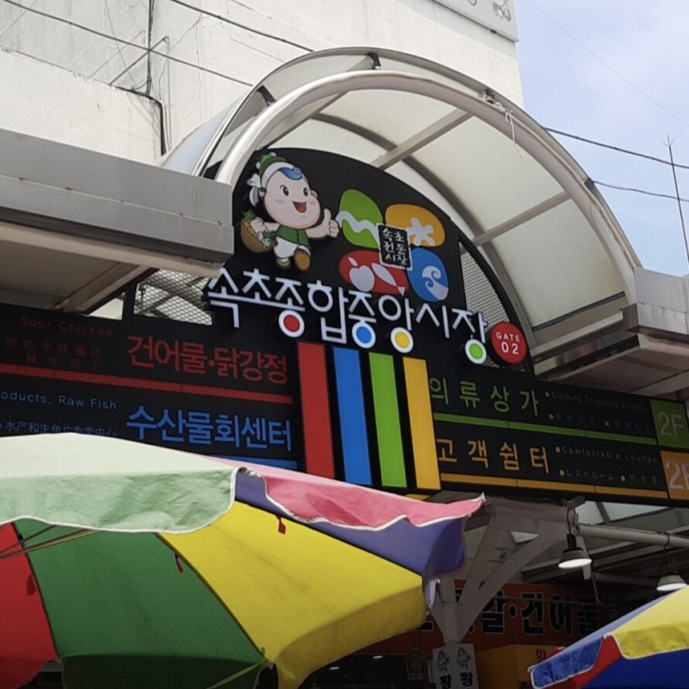
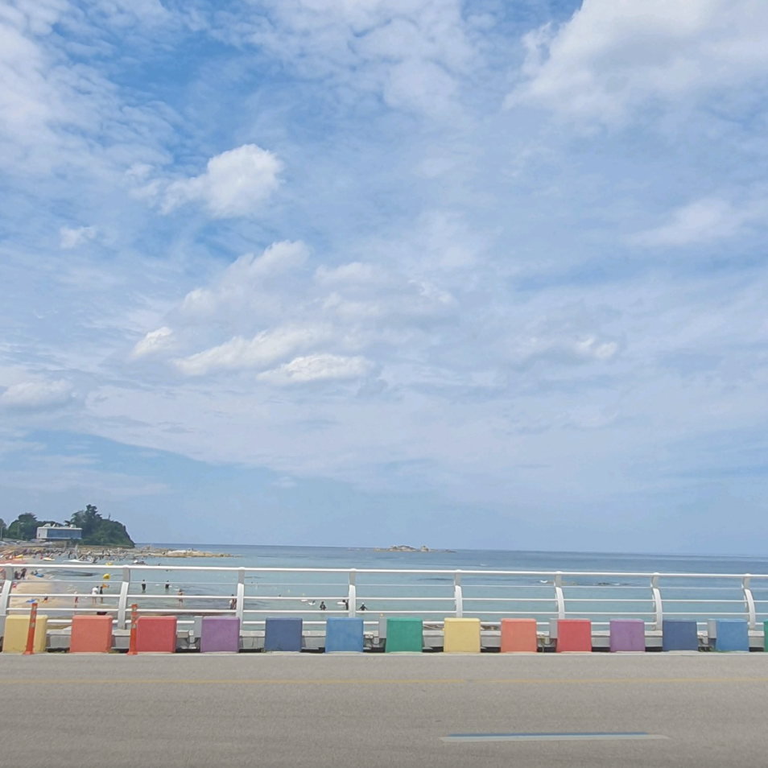
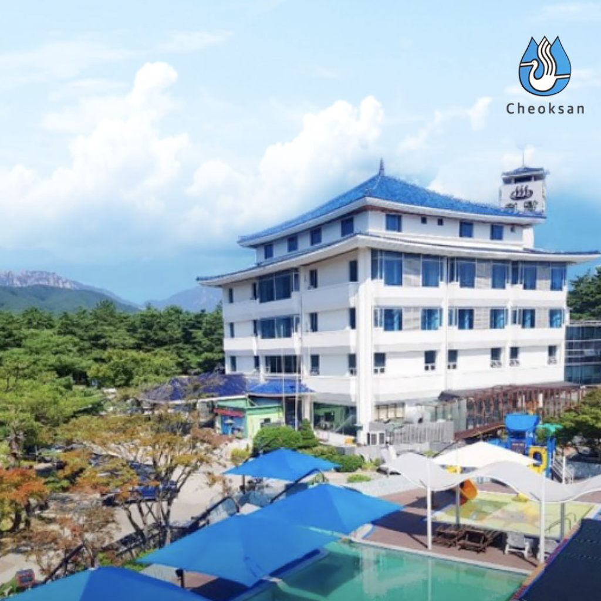
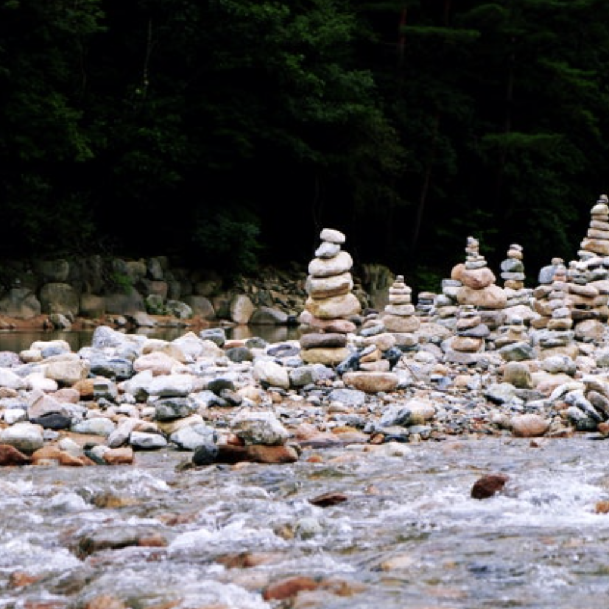
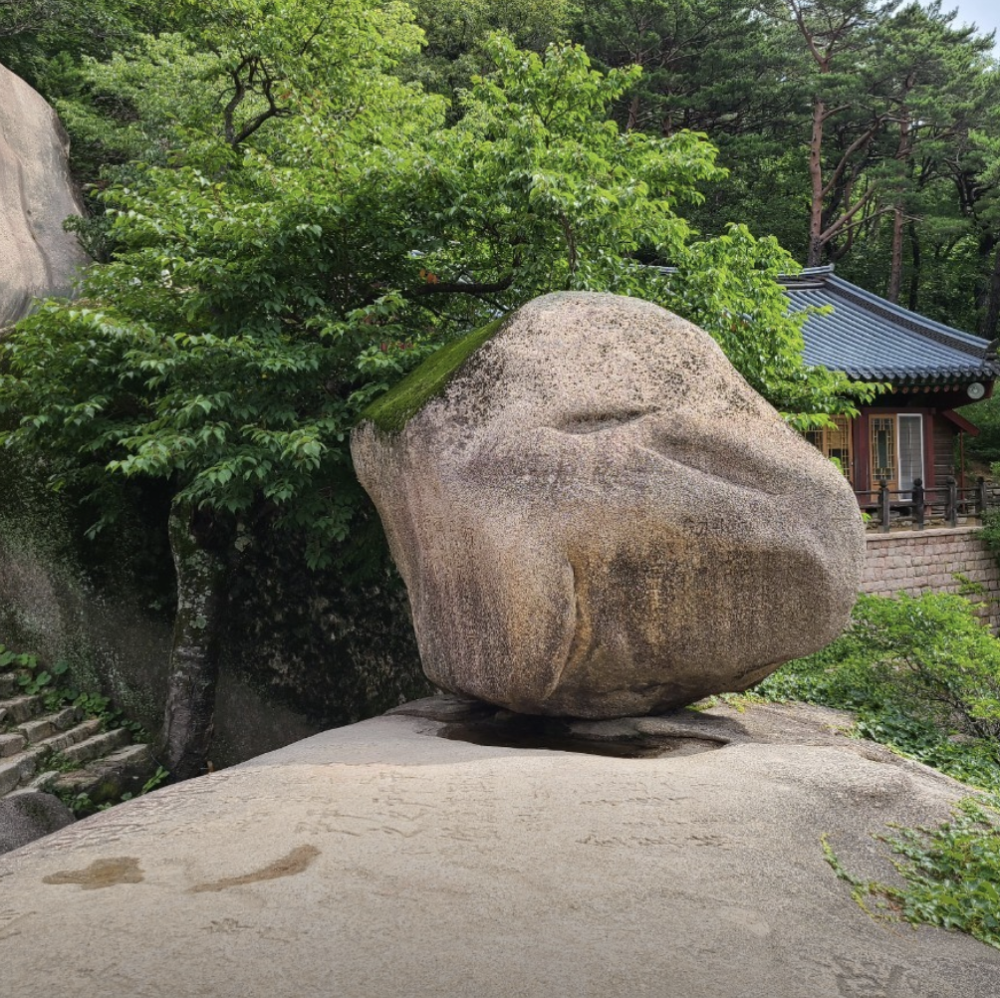
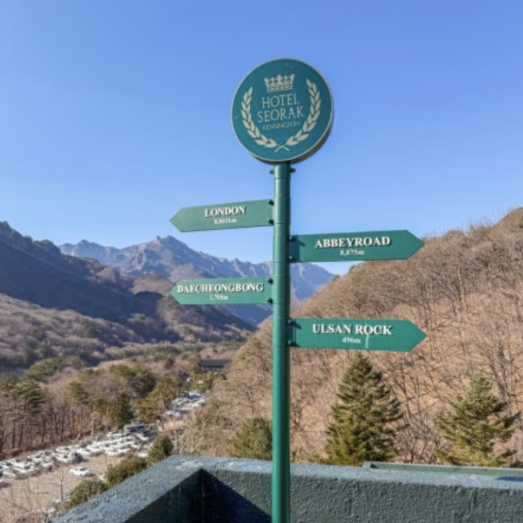
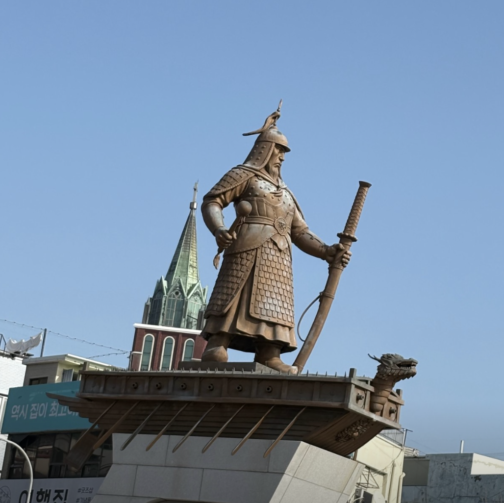
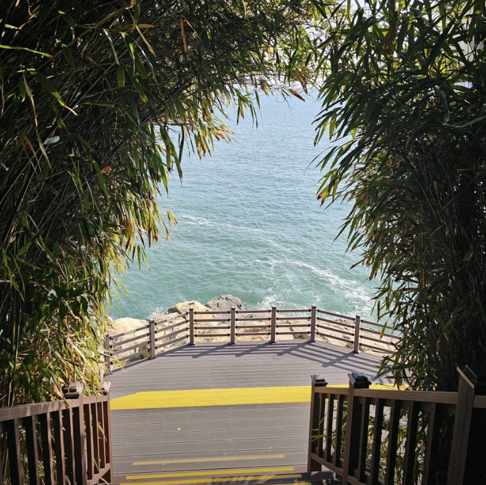
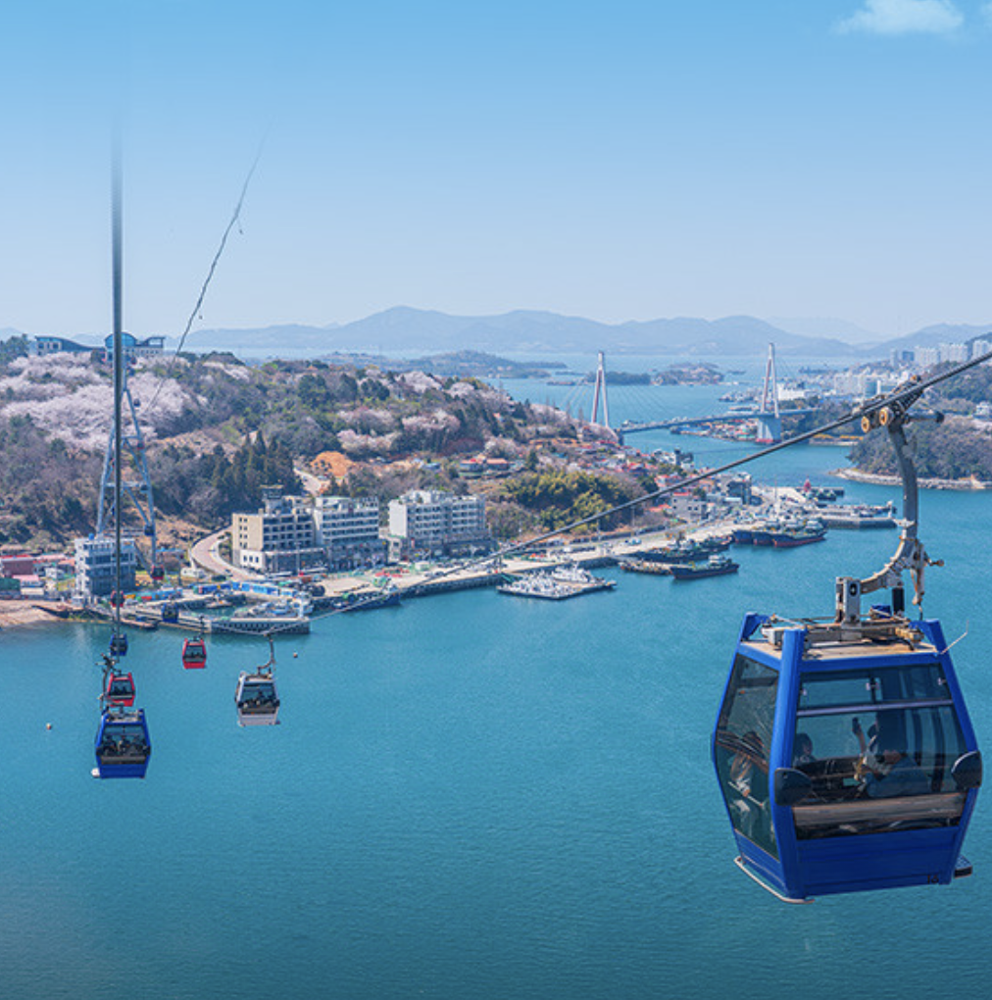
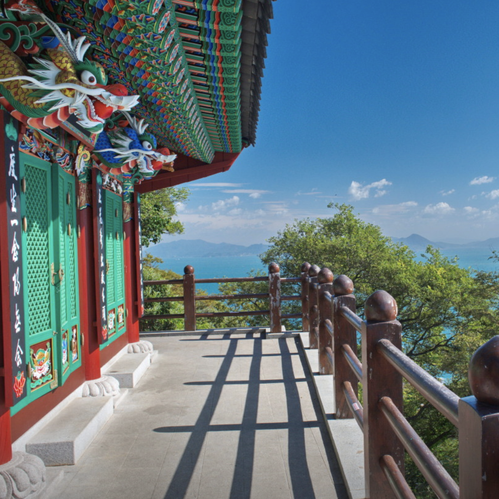

🌊 강원도 속초 & 고성
📌 여행지 추천

도락의 재미를 충족시켜 주는 속초의 대표적인 전통시장입니다. 닭강정, 오징어순대, 신선한 활어회, 다채로운 튀김류 등 현지의 특색 있는 먹거리들이 한곳에 모여 있습니다.

에메랄드빛의 맑고 투명한 바다와 독특한 형태의 바위들이 어우러져 이국적인 분위기를 자아내는 곳입니다. 아기자기하게 꾸며진 무지개 해안도로 덕분에 SNS 감성 사진 촬영지로도 인기가 높은 핫플레이스입니다.

만약 제대로 된 온천 목욕이나 노천탕까지 즐기며 전날의 숙취를 완벽하게 날려버리고 싶다면, 바로 근처에 있는 전통 있는 온천 시설인 척산온천휴양촌에 방문해 다 함께 사우나를 하고 나오는 것도 남자들만의 끈끈한 여행 코스로 추천합니다.

사찰인 만큼 너무 시끌벅적하게 장난치기는 어려우니, 조용히 경치를 즐기며 "우리 벌써 38살이다" 같은 진지한 사는 이야기나 추억담을 나누는 웰컴 코스로 활용해 보세요.

남고 시절 체력을 생각하며 호기롭게 시작하기 딱 좋은 코스입니다. 흔들바위(계조암)까지는 설악산 소공원 주차장에서 편도 약 1시간 정도로, 경사가 완만하고 길 정비가 잘 되어 있어 30대 후반 남자들이 오랜만에 땀을 가볍게 흘리며 입을 털기에(?) 최적의 난이도입니다.

등산하느라 이마에 땀이 송골송골 맺힌 상태에서, 설악산 비경이 통창으로 쏟아지는 자리에 앉아 들이켜는 시원한 맥주 한잔은 그야말로 천국입니다. 야외 테라스석이 특히 명당입니다.
*모든 설명은 제미나이로 작성되었습니다*
🌅 전라남도 여수
📌 여행지 추천

여수 여행의 중심이자 남자들의 식도락 여행을 시작하기에 가장 좋은 베이스캠프입니다. 광장 주변으로 유명한 간식거리와 로컬 맛집들이 밀집해 있어, 가볍게 간식을 사 먹으며 동네를 둘러보거나 밤에 한잔하기 전 '라떼' 시절 이야기를 풀기 좋습니다.

방파제 길을 따라 걸어가며 시원한 바닷바람을 맞고, 섬 내부의 울창한 숲길을 산책할 수 있는 여수 대표의 자연 명소입니다.

바다 위를 가로지르며 여수 시내와 돌산대교의 풍경을 한눈에 담을 수 있는 하이라이트 코스입니다. 특히 늦은 오후나 해질녘에 탑승하면 여수의 스카이라인이 붉게 물드는 장관을 친구들과 함께 감상할 수 있습니다.

바다를 향해 있는 암자라는 이름에 걸맞게, 깎아지른 듯한 해안 절벽 위에 자리 잡고 있습니다. 절에 올라서면 끝없는 수평선이 펼쳐지는데, 그 호쾌한 풍경이 남자들의 가슴을 탁 트이게 만듭니다.
*모든 설명은 제미나이로 작성되었습니다*